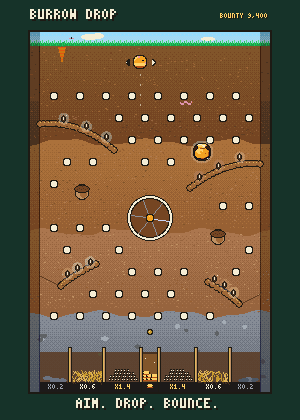

SQUEEK DEN GUIDE
SQUEEK DEN GUIDE
Back to your den
Squeektoshi is a real hamster. When he runs, his wheel settles Squeek blocks on the chain, and every block pays every den in Watts, whether you're watching or not.
Earning Watts
- Every block pays 10 W on a basic wheel. Wheel upgrades raise that, up to 2×.
- When he sleeps, your bed earns instead, about half as fast. Bed upgrades go up to 2× too.
- Keep the tab open: watching adds +20%.
- When blocks come in fast, the wheel pays up to +50% more.
- New dens start with 10,000 W.
Your den
- Spend Watts on furniture, rugs, wall decor, wallpaper, floors and skins. Drag things to move them; F turns them around.
- Den material (stone, iron, silver) makes raids on you fail more often, up to 15% less likely to land. Gold and diamond are just for looks.
Raids
- You get 10 raids a day; they come back at 00:00 UTC.
- You can raid dens holding at least 70% of your Watts, or anyone who raided you in the last 24 hours.
- Pick a multiplier (1.5× to 10×) and a wager. The raid screen shows your chance. Higher multipliers pay more and land less often.
- Win and you take (multiplier − 1) × your wager from them, up to 25% of what they hold. Now and then (5% of wins) a raid crits: the game adds half again on top, so it never costs them more.
- While Squeektoshi is running, a win pays 10% extra. The game adds that too.
- Lose and your whole wager burns. Nobody gets it.
- Raiding someone richer than you is the better bet. Being near the top makes you everyone's favourite target.
- After someone raids you successfully, you get 10 minutes of peace.
Lucky crates
- While you're watching, every block has a 1% chance to drop a parcel on your floor. Tap it to open.
- Up to 5 a day, and 3 waiting at once.
- Most hold Watts (200–800 W). Some hold a boost or a Raid Shield token, and once in a while something you can't buy anywhere.
- Boosts and shield tokens wait in Your things. Tap one to see what it does, tap it again to use it.
- Double Wheel: 2× wheel Watts for 1 hour.
- Deep Sleep: +50% bed income for 8 hours.
- Lucky Whisker: +10 points on your next raid.
- Wager Insurance: your next failed raid gives back half the wager.
- Raid Shield: 3 hours where nobody can raid you, and you can't raid either. Once a day.
Pets
- Pets move in by themselves while you're watching. You can't buy them, and each one gives a small bonus.
- Common ones come for something in your den. The Pets tab shows who likes what.
- Rarer ones only come while Squeektoshi is running, and the Magpie only on a golden block.
- Keep them all, but only 3 can be home at once. Only the ones home give their bonus.
Golden blocks
About 1 block in 150 is golden. It pays 10× wheel Watts to everyone watching when it lands.
Burrow Drop

- Tap the Burrow badge in your den. Wager 500 W or more, aim, let go, and he bounces down into a chamber. Everything below pays in proportion to your wager. Dead End pays 0.2×, Nest 0.6× and Pantry 1.4×.
- Seeds on the roots pay a little, and more when you grab them in a row. Golden boards pay them double.
- Every board shows one prize you can't get anywhere else. Hit it and it's yours. Rarer prizes turn up less often and sit in harder spots: common, uncommon, rare, epic, legendary. A bigger wager makes the prize easier to hit, up to 10,000 W. If you already have it, you get Watts instead.
- The Bounty is one pot shared by everyone. Every drop adds 5% of its wager to it. Land in the narrow slot in the middle and you take all of it, whatever you wagered, then it starts again at 3,000 W.
- The burrow changes with Squeektoshi: a garden while he runs, moonlight while he sleeps, a crystal cave on golden boards.
Visiting
Tap 👁 next to a den on the leaderboard, a name in the raid feed, or Random den to look around someone else's place. If they're a fair target, you can raid them from there.